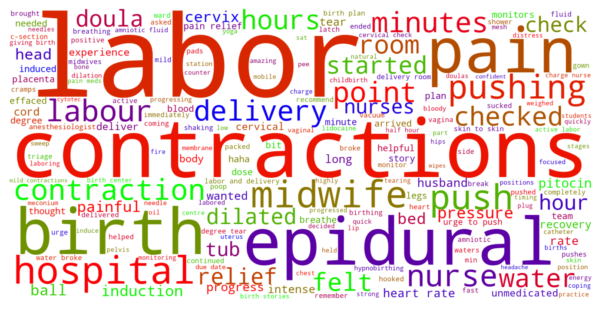

Jump to section:
Samples from Social CorpusHits per UMLS Alias on Social Corpus
Word Cloud Comparison
Embedding Space Comparison
Nearest Neighbors by Semantic Type
Related Analysed Concepts
Samples from Social Corpus
Let everyone know when you get induced if you like but only allow 5-10 minute visits during labor .
Confidence: 0.536. Reddit link
I was stuck having to feel every single thing during my labor .
Confidence: 0.505. Reddit link
My OB was talking to me about optional vs mandatory medical precautions / procedures for me and my baby during labor and delivery .
Confidence: 0.668. Reddit link
I feel like I just fell in love with everyone who helped me during labor .
Confidence: 0.587. Reddit link
We talked about my anxiety and if I'd really be able to not listen to my baby during labor but that was the plan !
Confidence: 0.668. Reddit link
I am needle phobic , I don't know how to go through needles during labor and delivery , HELP !
Confidence: 0.667. Reddit link
Parents who used a doula during labor , was your birth outcome / experience worth the financial cost ?
Confidence: 0.649. Reddit link
- Being mobile during labor is helpful , but it doesn't provide " relief " exactly .
Confidence: 0.530. Reddit link
I felt like they really prepared me for all the different things that could happen during labor !
Confidence: 0.632. Reddit link
That made me nervous but she said that my story was " convincing enough " they would check me in ( she had a really dry sense of humor and was great during the whole labor ) .
Confidence: 0.515. Reddit link
Hits per UMLS Alias on Social Corpus
-
sepsis during labor
187 hits
-
sepsis during labour
50 hits
-
sepsis during labor disorder
2 hits
-
septicemia during labor
1 hits
-
septicaemia during labour
0 hits
Word Cloud Comparison
Keywords matching C0269810
Keywords matched against concept. Word size represents frequency.
Keywords co-occurring with C0269810
Co-occurrence is measured at the document-level (i.e. Reddit submissions). Frequencies are normalized to account for keywords common to all CUIs.
Embedding Space Comparison
T-SNE comparison for word embeddings learned from medical domain (EuroPMC) and social media (Reddit) independently.
Pearson correlation for union of closest 1000 neighbors: -0.036
Nearest Neighbors by Semantic Type
Most similar concepts in each of the selected UMLS semantic types. Based on concept embeddings from social corpus.
T046 (Pathologic Function)
-
C0269810
Sepsis during labor
1.000 Similarity
-
C4075684
Hypoxemia during surgery
0.775 Similarity
-
C0022876
Early labor
0.775 Similarity
-
C0810343
Complications during labor
0.762 Similarity
-
C0152154
Labor long
0.759 Similarity
-
C0269398
Miscarriage with sepsis
0.756 Similarity
-
C0013418
Dystocia
0.753 Similarity
-
C0151526
Pre term
0.753 Similarity
T047 (Disease or Syndrome)
-
C0036690
Sepsis
0.831 Similarity
-
C4704910
Sepsis during pregnancy
0.803 Similarity
-
C0473498
Ruptured uterus before labor
0.740 Similarity
-
C0340464
Extrasystoles
0.733 Similarity
-
C0042251
Vaginosis
0.722 Similarity
-
C0023890
Cirrhosis
0.721 Similarity
-
C0231341
Aging premature
0.714 Similarity
-
C0205721
Hospital infection
0.710 Similarity
T037 (Injury or Poisoning)
-
C0269858
Traumatic lesion during delivery
0.764 Similarity
-
C0730592
Vulval tear during delivery
0.726 Similarity
-
C0005604
Traumatic birth
0.707 Similarity
-
C1959898
Traumatic injury during pregnancy
0.688 Similarity
-
C0417108
Jump from burning hospital
0.674 Similarity
-
C3203359
Ruptures
0.660 Similarity
-
C0876926
Traumatic brain damage
0.655 Similarity
-
C0554397
Vaginal muscle tear
0.626 Similarity
T184 (Sign or Symptom)
-
C0565619
Fetal distress labor
0.738 Similarity
-
C1301639
Pain during labor delivery
0.720 Similarity
-
C2735340
Preterm labor symptoms
0.707 Similarity
-
C0474368
Laboring pain
0.687 Similarity
-
C1269642
Pain from metastases
0.683 Similarity
-
C0423636
Heart pain
0.673 Similarity
-
C0238740
Severe back pain
0.672 Similarity
-
C3494358
Prodromal sign
0.660 Similarity
T079 (Temporal Concept)
-
C0022872
Second stage labour
0.734 Similarity
-
C0022871
Labor first stage
0.717 Similarity
-
C0032790
After surgery
0.693 Similarity
-
C4025592
Late onset
0.679 Similarity
-
C0449244
Onset time
0.666 Similarity
-
C4255413
Date time surgery
0.647 Similarity
-
C3494201
Surgical time
0.645 Similarity
-
C2964377
Preterm time
0.642 Similarity
T048 (Mental or Behavioral Dysfunction)
-
C0038436
Ptsd
0.724 Similarity
-
C0338927
Hospitalism
0.686 Similarity
-
C0522187
Fear childbirth
0.680 Similarity
-
C0232600
Making self sick
0.647 Similarity
-
C0038441
Stress disorder
0.646 Similarity
-
C0233705
Fear getting cancer
0.630 Similarity
-
C0003537
Losing words
0.623 Similarity
-
C0036857
Severe mental handicap
0.598 Similarity
T005 (Virus)
-
C3743464
Mycobacteriophage whirlwind
0.709 Similarity
-
C5058350
Fairfax lookout virus
0.572 Similarity
-
C3768023
Mycobacteriophage conspiracy
0.562 Similarity
-
C4415400
Phage wrath
0.560 Similarity
-
C0205939
Cold virus common
0.552 Similarity
-
C0086776
Parvovirus
0.536 Similarity
-
C4433204
King virus
0.533 Similarity
-
C1220459
Hart park group
0.531 Similarity
T101 (Patient or Disabled Group)
-
C0008098
Child hospitalized
0.683 Similarity
-
C0871503
Dying patients
0.642 Similarity
-
C1516213
Cancer patient
0.585 Similarity
-
C0021562
Inpatient
0.576 Similarity
-
C1456639
Living with cancer
0.575 Similarity
-
C0682161
Dually diagnosed
0.573 Similarity
-
C0233363
Monoamniotic twins
0.564 Similarity
-
C1516231
Cancer survivor
0.560 Similarity
T060 (Diagnostic Procedure)
-
C0040862
Labor trial
0.678 Similarity
-
C0033053
Prenatal diagnoses
0.649 Similarity
-
C1578855
Monitoring labor
0.623 Similarity
-
C0195324
Cone biopsy
0.606 Similarity
-
C0150496
Heart monitoring
0.603 Similarity
-
C0596473
Detection early
0.602 Similarity
-
C0920688
Cancer diagnosis
0.597 Similarity
-
C4529960
Heart test
0.595 Similarity
T032 (Organism Attribute)
-
C0805393
Breathing spontaneous
0.669 Similarity
-
C0557155
Life event
0.554 Similarity
-
C4086849
Sex at birth
0.542 Similarity
-
C3714565
Physical condition
0.539 Similarity
-
C0017504
Gestational age
0.527 Similarity
-
C0005612
Weight baby
0.513 Similarity
-
C0598779
Life history
0.507 Similarity
-
C0949285
Antibiotic resistance
0.495 Similarity
T061 (Therapeutic or Preventive Procedure)
-
C0269694
Normal birth
0.667 Similarity
-
C0193373
Liver surgery
0.662 Similarity
-
C0269704
Spontaneous vaginal breech birth
0.659 Similarity
-
C0018821
Heart surgery
0.655 Similarity
-
C0399997
Emergency appendectomy
0.655 Similarity
-
C0473288
Stabilising induction
0.651 Similarity
-
C0404325
Induction delivery procedures
0.651 Similarity
-
C0020674
Hypothermia induced
0.650 Similarity
T023 (Body Part, Organ, or Organ Component)
-
C0521421
Entire ear
0.651 Similarity
-
C0227486
Left liver
0.641 Similarity
-
C0229402
Incus long process
0.633 Similarity
-
C0225730
Left lung
0.597 Similarity
-
C0224141
Mentalis
0.596 Similarity
-
C0024109
Lung
0.593 Similarity
-
C0034052
Pulmonary arteries
0.593 Similarity
-
C1268107
Lung part
0.588 Similarity
T019 (Congenital Abnormality)
-
C0000768
Birth defect
0.649 Similarity
-
C0152021
Congenital heart disease
0.632 Similarity
-
C0149530
Congenital heart block
0.630 Similarity
-
C0018798
Heart defect
0.627 Similarity
-
C0266449
Brain malformation
0.609 Similarity
-
C0266383
Abnormality uterus
0.595 Similarity
-
C3536558
Complex congenital heart defect
0.595 Similarity
-
C0432185
Absent muscles since birth
0.593 Similarity
T201 (Clinical Attribute)
-
C0566679
Length labor
0.647 Similarity
-
C1997846
Heart rate recovery time
0.613 Similarity
-
C0521982
Successful treatment
0.598 Similarity
-
C0012655
Predisposition
0.597 Similarity
-
C1301668
Delivery time
0.595 Similarity
-
C1286282
Birth outcomes
0.592 Similarity
-
C0032930
Trigger
0.583 Similarity
-
C0429622
Oxygen supply
0.581 Similarity
T100 (Age Group)
-
C3494262
Extremely preterm infant
0.644 Similarity
-
C4048294
Preterm baby
0.605 Similarity
-
C4551581
Full term baby
0.566 Similarity
-
C0021289
Newborn
0.518 Similarity
-
C3825962
Middle aged women
0.462 Similarity
-
C0596728
65 years old
0.457 Similarity
-
C0008059
Child
0.443 Similarity
-
C0680085
Early adulthood
0.439 Similarity
T049 (Cell or Molecular Dysfunction)
-
C4725191
Stop lost
0.643 Similarity
-
C0544885
Stop gain
0.565 Similarity
-
C1705285
Mutated
0.529 Similarity
-
C0008628
Del
0.509 Similarity
-
C0002938
Aneuploidy
0.495 Similarity
-
C0008625
Chromosomal abnormality
0.486 Similarity
-
C0040715
Translocation
0.425 Similarity
-
C0041107
Trisomy
0.424 Similarity
T059 (Laboratory Procedure)
-
C0368930
Clotting time
0.638 Similarity
-
C0005729
Bleeding time
0.610 Similarity
-
C0014772
Counting rbc
0.605 Similarity
-
C0430400
Culture general
0.600 Similarity
-
C0023901
Liver tests
0.585 Similarity
-
C0545131
Cbc diff
0.581 Similarity
-
C1295143
Fetal fibronectin test
0.579 Similarity
-
C0023508
White blood cells
0.572 Similarity
T190 (Anatomical Abnormality)
-
C0016169
Sinus
0.622 Similarity
-
C4025734
Anomaly scalp
0.615 Similarity
-
C4732742
Hole center heart
0.562 Similarity
-
C3887590
Stricture ureter
0.550 Similarity
-
C0019294
Inguinal hernia
0.545 Similarity
-
C0240063
Keyhole iris
0.528 Similarity
-
C0019270
Hernia
0.525 Similarity
-
C0009918
Contraction joint
0.523 Similarity
T067 (Phenomenon or Process)
-
C0023983
Long term effects
0.618 Similarity
-
C0337240
Fall while being carried
0.595 Similarity
-
C0023670
Events life change
0.543 Similarity
-
C0013956
Emergency
0.531 Similarity
-
C0034897
Recurring
0.529 Similarity
-
C0035020
Relapse
0.526 Similarity
-
C0677038
Increase pressure
0.524 Similarity
-
C2986841
Binding potential
0.479 Similarity
T031 (Body Substance)
-
C1446336
Multiple plaques
0.616 Similarity
-
C0392908
Secretion vaginal
0.615 Similarity
-
C0007806
Spinal fluid
0.603 Similarity
-
C0439057
Early morning urine
0.577 Similarity
-
C0162371
Cord blood
0.530 Similarity
-
C0012621
Discharge
0.524 Similarity
-
C3496630
Swab from uterus
0.524 Similarity
-
C1549095
Brain cyst fluid
0.521 Similarity
T041 (Mental Process)
-
C0424157
Fear going crazy
0.615 Similarity
-
C0423909
Long term memory
0.582 Similarity
-
C0025265
Short term memory
0.577 Similarity
-
C0025361
Thought process
0.575 Similarity
-
C0015726
Scared
0.570 Similarity
-
C0001762
After image finding
0.570 Similarity
-
C0677838
Grief loss
0.561 Similarity
-
C0871504
Test anxiety
0.555 Similarity
T200 (Clinical Drug)
-
C3218395
Papain pill
0.609 Similarity
-
C0723917
Triple antibiotic ointment
0.528 Similarity
-
C1163679
Injections sterile water
0.507 Similarity
-
C0307304
Pitocin injection
0.507 Similarity
-
C4048176
Oxytocin injection
0.496 Similarity
-
C3216620
Progesterone vaginal product
0.480 Similarity
-
C1247002
Misoprostol oral tablet
0.459 Similarity
-
C0599396
Sleeping pills
0.427 Similarity
T034 (Laboratory or Test Result)
-
C2266672
Clotting time finding
0.606 Similarity
-
C5206315
Nse positive
0.598 Similarity
-
C0240802
Positive pregnancy test
0.582 Similarity
-
C0588465
Sperm forward progression
0.581 Similarity
-
C5206317
Mme positive
0.581 Similarity
-
C5201036
Low platelets
0.574 Similarity
-
C3898879
Triple positive
0.570 Similarity
-
C5206321
Fat positive
0.564 Similarity
T042 (Organ or Tissue Function)
-
C2753527
Heart induction
0.601 Similarity
-
C1325917
Organ induction
0.592 Similarity
-
C0005778
Clotting
0.592 Similarity
-
C4250378
Neural induction
0.589 Similarity
-
C0027045
Heart beating
0.574 Similarity
-
C0232102
Blood fluidity
0.566 Similarity
-
C0042130
Uterine contractions
0.562 Similarity
-
C0234108
Summation
0.540 Similarity
T007 (Bacterium)
-
C0018154
Gram positive bacteria
0.593 Similarity
-
C0579233
Group b strep
0.502 Similarity
-
C0995648
Genus quinella
0.500 Similarity
-
C3801085
Enorma
0.462 Similarity
-
C0995705
Frankia
0.445 Similarity
-
C0022828
L forms
0.445 Similarity
-
C4169658
Convivina
0.440 Similarity
-
C0014834
E coli
0.434 Similarity
T074 (Medical Device)
-
C0462877
Oxygen giving set
0.590 Similarity
-
C0180647
Internal fetal heart rate monitoring
0.586 Similarity
-
C3878737
Uternine contraction monitor internal
0.586 Similarity
-
C0013962
Emergency medical tag
0.572 Similarity
-
C0179350
Blood gas monitor
0.550 Similarity
-
C0180236
Curetting
0.549 Similarity
-
C0043305
Intensifying screen xray
0.548 Similarity
-
C0183884
Tube test
0.545 Similarity
T054 (Social Behavior)
-
C0582101
Talking about dying
0.585 Similarity
-
C0019421
Straight
0.545 Similarity
-
C1319178
Coping family
0.529 Similarity
-
C1261512
Attack
0.518 Similarity
-
C0422386
Patient suing doctor finding
0.511 Similarity
-
C0028658
Nurse patient
0.510 Similarity
-
C0282657
Infibulations
0.508 Similarity
-
C4505276
Body pushing
0.503 Similarity
T039 (Physiologic Function)
-
C2256369
Heart process
0.583 Similarity
-
C0035203
Ventilation
0.576 Similarity
-
C0599423
Joint stress
0.550 Similarity
-
C0149784
Reaction stress
0.538 Similarity
-
C0025320
Change
0.527 Similarity
-
C0026820
Muscle contraction
0.521 Similarity
-
C0282498
Heat responses
0.516 Similarity
-
C0442695
Bearing down
0.515 Similarity
T195 (Antibiotic)
-
C0003232
Antibiotics
0.580 Similarity
-
C0723285
Septa
0.575 Similarity
-
C0718575
Antibiotics ear
0.522 Similarity
-
C0030842
Penicillin
0.459 Similarity
-
C0002645
Amoxicillin
0.457 Similarity
-
C0279516
Antibacterial
0.434 Similarity
-
C0718950
Biomox
0.408 Similarity
-
C0013090
Doxycycline
0.396 Similarity
T044 (Molecular Function)
-
C1721104
Breaks dna
0.554 Similarity
-
C0887940
Gene arrangements
0.503 Similarity
-
C0301647
Strand breaks
0.500 Similarity
-
C1149397
Heartless ligand
0.488 Similarity
-
C0369768
Oxygen saturation
0.487 Similarity
-
C0010357
Cross reactive
0.442 Similarity
-
C1150342
Dopachrome rearranging enzyme
0.434 Similarity
-
C1149528
Wishful thinking binding
0.434 Similarity
T018 (Embryonic Structure)
-
C0440731
Fetal brain
0.553 Similarity
-
C0015935
Fetal heart
0.550 Similarity
-
C1278988
Entire placenta
0.510 Similarity
-
C1284022
Trilaminar disc
0.502 Similarity
-
C0553522
Cord placenta umbilical
0.501 Similarity
-
C0008508
Chorionic villi
0.494 Similarity
-
C0002630
Amniotic
0.481 Similarity
-
C0008503
Chorionic
0.479 Similarity